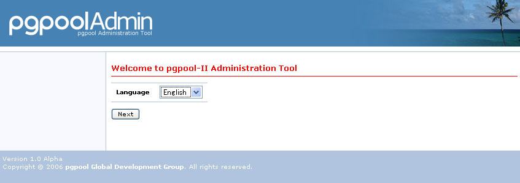
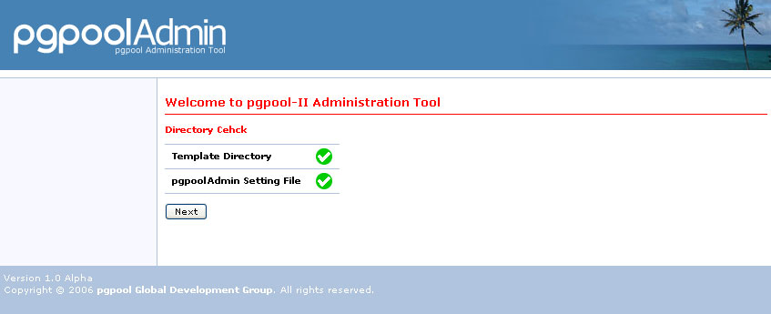
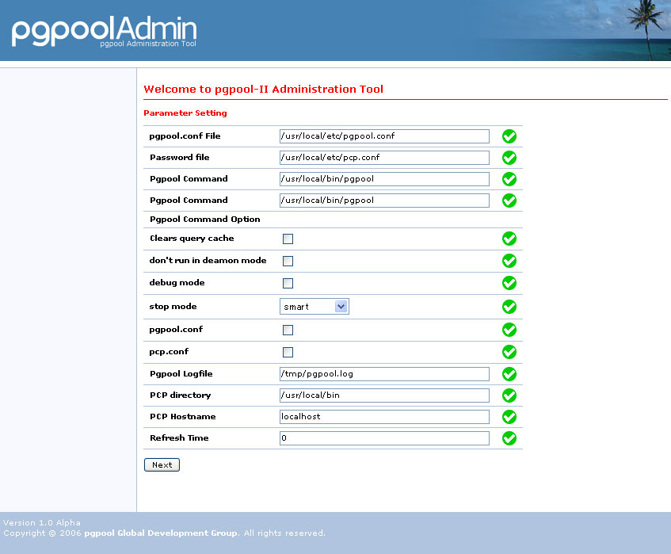

Installing Pgpool Administration Tool
Preface
Please confirm pgpool normally can be installed, and operates before starting the installation of the pgpool management tool. The following software is at least installed in the server that operates pgpool when the pgpool management tool is installed, and it should be normally operating.- HTTP Server(Apache)
- PHP4.4.2 and higher
- pgpool
- Setup the HTTP, PHP and pgpool properly.
- Turn cookie and JavaScript? support in your browser on.
Precondition
It explains on the assumption of being set it here as follows.| /var/www/html | |
| apache | |
| /var/www/html/admin-tool | |
| /usr/local/bin/pgpool | |
| /usr/local/bin/pcp_attach_node | |
| /usr/local/bin/pcp_detach_node | |
| /usr/local/bin/pcp_node_count | |
| /usr/local/bin/pcp_node_info | |
| /usr/local/bin/pcp_proc_count | |
| /usr/local/bin/pcp_proc_info | |
| /usr/local/bin/pcp_stop_pgpool | |
| /usr/local/bin/pcp_systemdb_info | |
| /usr/local/bin/pg_md5 | |
| /usr/local/etc/pgpool.conf | |
| /usr/local/etc/pcp.conf |
Install
It explains the installation of the management tool as follows.- To execute pgpool and the pcp tool set up from the Apach user, the right of access is set.
- pgpool
- pcp_attach_node
- pcp_detach_node
- pcp_node_count
- pcp_node_info
- pcp_proc_count
- pcp_proc_info
- pcp_stop_pgpool
- pcp_systemdb_info
- pg_md5
-
The login user is registered in the pcp.conf file.The turning md5 password is obtained.
Next, the obtained character string write on pcp.conf as follows.
pg_md5 password_string username:md5 password
-
Admin-tools.tar.gz that is the management tool program file is developed below the html directory of Apache.
mv admin-tool.tar.gz /tmp cd /tmp tar xzf admin-tool.tar.gz mv admin-tool /var/www/html rm admin-tool.tar.gz -
The file is confirmed.
find /var/www/html/admin-tool -print /var/www/html/admin-tool /var/www/html/admin-tool/install /var/www/html/admin-tool/install/finish.php /var/www/html/admin-tool/install/defaultParameter.php /var/www/html/admin-tool/install/setLang.php /var/www/html/admin-tool/install/checkDirectory.php /var/www/html/admin-tool/install/images /var/www/html/admin-tool/install/images/Thumbs.db /var/www/html/admin-tool/install/images/ng.gif /var/www/html/admin-tool/install/images/ok.gif /var/www/html/admin-tool/install/index.php /var/www/html/admin-tool/install/checkParameter.php /var/www/html/admin-tool/install/lang /var/www/html/admin-tool/install/lang/ja.lang.php /var/www/html/admin-tool/install/lang/en.lang.php /var/www/html/admin-tool/libs /var/www/html/admin-tool/libs/Smarty.class.php /var/www/html/admin-tool/libs/plugins /var/www/html/admin-tool/libs/plugins/function.counter.php /var/www/html/admin-tool/libs/plugins/modifier.escape.php /var/www/html/admin-tool/libs/plugins/modifier.replace.php /var/www/html/admin-tool/libs/plugins/modifier.count_characters.php /var/www/html/admin-tool/libs/plugins/block.textformat.php /var/www/html/admin-tool/libs/plugins/modifier.spacify.php /var/www/html/admin-tool/libs/plugins/modifier.date_format.php /var/www/html/admin-tool/libs/plugins/modifier.regex_replace.php /var/www/html/admin-tool/libs/plugins/modifier.lower.php /var/www/html/admin-tool/libs/plugins/modifier.debug_print_var.php /var/www/html/admin-tool/libs/plugins/function.eval.php /var/www/html/admin-tool/libs/plugins/function.html_image.php /var/www/html/admin-tool/libs/plugins/modifier.nl2br.php /var/www/html/admin-tool/libs/plugins/modifier.strip_tags.php /var/www/html/admin-tool/libs/plugins/outputfilter.trimwhitespace.php /var/www/html/admin-tool/libs/plugins/function.assign_debug_info.php /var/www/html/admin-tool/libs/plugins/modifier.strip.php /var/www/html/admin-tool/libs/plugins/shared.make_timestamp.php /var/www/html/admin-tool/libs/plugins/function.html_select_date.php /var/www/html/admin-tool/libs/plugins/modifier.truncate.php /var/www/html/admin-tool/libs/plugins/compiler.assign.php /var/www/html/admin-tool/libs/plugins/modifier.capitalize.php /var/www/html/admin-tool/libs/plugins/modifier.wordwrap.php /var/www/html/admin-tool/libs/plugins/modifier.indent.php /var/www/html/admin-tool/libs/plugins/function.html_checkboxes.php /var/www/html/admin-tool/libs/plugins/shared.escape_special_chars.php /var/www/html/admin-tool/libs/plugins/function.cycle.php /var/www/html/admin-tool/libs/plugins/function.math.php /var/www/html/admin-tool/libs/plugins/modifier.cat.php /var/www/html/admin-tool/libs/plugins/function.html_select_time.php /var/www/html/admin-tool/libs/plugins/function.html_options.php /var/www/html/admin-tool/libs/plugins/function.fetch.php /var/www/html/admin-tool/libs/plugins/modifier.count_paragraphs.php /var/www/html/admin-tool/libs/plugins/function.config_load.php /var/www/html/admin-tool/libs/plugins/function.popup_init.php /var/www/html/admin-tool/libs/plugins/modifier.string_format.php /var/www/html/admin-tool/libs/plugins/modifier.count_sentences.php /var/www/html/admin-tool/libs/plugins/modifier.count_words.php /var/www/html/admin-tool/libs/plugins/modifier.default.php /var/www/html/admin-tool/libs/plugins/function.popup.php /var/www/html/admin-tool/libs/plugins/modifier.upper.php /var/www/html/admin-tool/libs/plugins/function.html_table.php /var/www/html/admin-tool/libs/plugins/function.debug.php /var/www/html/admin-tool/libs/plugins/function.html_radios.php /var/www/html/admin-tool/libs/plugins/function.mailto.php /var/www/html/admin-tool/libs/internals /var/www/html/admin-tool/libs/internals/core.write_cache_file.php /var/www/html/admin-tool/libs/internals/core.display_debug_console.php /var/www/html/admin-tool/libs/internals/core.load_resource_plugin.php /var/www/html/admin-tool/libs/internals/core.is_trusted.php /var/www/html/admin-tool/libs/internals/core.is_secure.php /var/www/html/admin-tool/libs/internals/core.assemble_plugin_filepath.php /var/www/html/admin-tool/libs/internals/core.get_microtime.php /var/www/html/admin-tool/libs/internals/core.load_plugins.php /var/www/html/admin-tool/libs/internals/core.rmdir.php /var/www/html/admin-tool/libs/internals/core.smarty_include_php.php /var/www/html/admin-tool/libs/internals/core.process_compiled_include.php /var/www/html/admin-tool/libs/internals/core.run_insert_handler.php /var/www/html/admin-tool/libs/internals/core.process_cached_inserts.php /var/www/html/admin-tool/libs/internals/core.write_file.php /var/www/html/admin-tool/libs/internals/core.write_compiled_include.php /var/www/html/admin-tool/libs/internals/core.rm_auto.php /var/www/html/admin-tool/libs/internals/core.get_include_path.php /var/www/html/admin-tool/libs/internals/core.write_compiled_resource.php /var/www/html/admin-tool/libs/internals/core.get_php_resource.php /var/www/html/admin-tool/libs/internals/core.read_cache_file.php /var/www/html/admin-tool/libs/internals/core.create_dir_structure.php /var/www/html/admin-tool/libs/internals/core.assign_smarty_interface.php /var/www/html/admin-tool/libs/Smarty_Compiler.class.php /var/www/html/admin-tool/libs/debug.tpl /var/www/html/admin-tool/libs/Config_File.class.php /var/www/html/admin-tool/nodeServerStatus.php /var/www/html/admin-tool/login.php /var/www/html/admin-tool/innerSystemCatalog.php /var/www/html/admin-tool/definePgpoolConfParam.php /var/www/html/admin-tool/systemDb.php /var/www/html/admin-tool/setLang.php /var/www/html/admin-tool/queryCache.php /var/www/html/admin-tool/pgconfig.php /var/www/html/admin-tool/common.php /var/www/html/admin-tool/status.php /var/www/html/admin-tool/config.php /var/www/html/admin-tool/command.php /var/www/html/admin-tool/templates /var/www/html/admin-tool/templates/pgmgtNotFound.tpl /var/www/html/admin-tool/templates/changePassword.tpl /var/www/html/admin-tool/templates/systemDb.tpl /var/www/html/admin-tool/templates/pleaseInstall.tpl /var/www/html/admin-tool/templates/nodeStatus.tpl /var/www/html/admin-tool/templates/login.tpl /var/www/html/admin-tool/templates/queryCache.tpl /var/www/html/admin-tool/templates/procInfo.tpl /var/www/html/admin-tool/templates/status.tpl /var/www/html/admin-tool/templates/innerSystemCatalog.tpl /var/www/html/admin-tool/templates/pgconfig.tpl /var/www/html/admin-tool/templates/help /var/www/html/admin-tool/templates/help/ja /var/www/html/admin-tool/templates/help/ja/changePassword.tpl /var/www/html/admin-tool/templates/help/ja/systemDb.tpl /var/www/html/admin-tool/templates/help/ja/login.tpl /var/www/html/admin-tool/templates/help/ja/queryCache.tpl /var/www/html/admin-tool/templates/help/ja/status.tpl /var/www/html/admin-tool/templates/help/ja/pgconfig.tpl /var/www/html/admin-tool/templates/help/ja/config.tpl /var/www/html/admin-tool/templates/help/ja/nodeServerStatus.tpl /var/www/html/admin-tool/templates/help/en /var/www/html/admin-tool/templates/help/en/changePassword.tpl /var/www/html/admin-tool/templates/help/en/systemDb.tpl /var/www/html/admin-tool/templates/help/en/login.tpl /var/www/html/admin-tool/templates/help/en/queryCache.tpl /var/www/html/admin-tool/templates/help/en/status.tpl /var/www/html/admin-tool/templates/help/en/pgconfig.tpl /var/www/html/admin-tool/templates/help/en/config.tpl /var/www/html/admin-tool/templates/help/en/nodeServerStatus.tpl /var/www/html/admin-tool/templates/footer.tpl /var/www/html/admin-tool/templates/innerError.tpl /var/www/html/admin-tool/templates/innerNodeServerStatus.tpl /var/www/html/admin-tool/templates/menu.tpl /var/www/html/admin-tool/templates/config.tpl /var/www/html/admin-tool/templates/nodeServerStatus.tpl /var/www/html/admin-tool/templates/error.tpl /var/www/html/admin-tool/screen.css /var/www/html/admin-tool/conf /var/www/html/admin-tool/conf/pgmgt.conf.php /var/www/html/admin-tool/innerNodeServerStatus.php /var/www/html/admin-tool/changePassword.php /var/www/html/admin-tool/images /var/www/html/admin-tool/images/question.gif /var/www/html/admin-tool/images/background.gif /var/www/html/admin-tool/images/descending.gif /var/www/html/admin-tool/images/ascending.gif /var/www/html/admin-tool/images/elephant.gif /var/www/html/admin-tool/images/Thumbs.db /var/www/html/admin-tool/images/spacer.gif /var/www/html/admin-tool/images/logo.gif /var/www/html/admin-tool/images/back.gif /var/www/html/admin-tool/images/marker.gif /var/www/html/admin-tool/images/seaen.jpg /var/www/html/admin-tool/images/turtle.gif /var/www/html/admin-tool/index.php /var/www/html/admin-tool/templates_c /var/www/html/admin-tool/lang /var/www/html/admin-tool/lang/ja.lang.php /var/www/html/admin-tool/lang/en.lang.php /var/www/html/admin-tool/procInfo.php /var/www/html/admin-tool/nodeStatus.php /var/www/html/admin-tool/help.php /var/www/html/admin-tool/logout.php - It accesses install/phpinfo.php from Web a browser. It is confirmed that the function of php_mstring and php_pgsql is effective.
- "Multibyte Support" is "enabled".
- "PostgreSQL Support" is "enabled".
Please confirm the setting of PHP again when these items are not "enabled".
- The writing right of access is set to the "templates_c" directory in the progressing directory and the "conf/pgmgt.conf.php" file.
cd /var/www/html/admin-tool chmod 777 templates_c - The writing authority to pgmgt.conf.php is set to apache process user.
cd /var/www/html/admin-tool/conf chown apache pgmgt.conf.php chmod 644 pgmgt.conf.php - The writing right is set to the pgpool.conf file and the pcp.conf file that is the configuration file of pgpool.
cd /usr/local/etc chown apache pgpool.conf chmod 644 pgpool.conf chown apache pcp.conf chmod 644 pcp.conf - The Multi byte and the PostgreSQL library is confirmed. Following URL is accessed from a browser.
http://ServerName/admin-tool/install/phpinfo.php
It is confirmed that the set up information of PHP is displayed. Whether Multibyte Support and PostgreSQL Support are enabled is confirmed to them. Please confirm the setting of PHP again when not becoming it.- It accesses the installer. URL is as follows.
http://ServerName/admin-tool/install/index.php
- The display language is selected.

- The right of access of the directory is confirmed. When
 is displayed right, it is appropriately set. Please click "Next" button.
Please it is not appropriately set when
is displayed right, it is appropriately set. Please click "Next" button.
Please it is not appropriately set when  is displayed, and confirm the error message, correct, and push "Check" button.
is displayed, and confirm the error message, correct, and push "Check" button.

- The management tool is set. When
is displayed right, it is appropriately set. Please click "Next" button.
Please it is not appropriately set when is displayed, and confirm the error message, correct, and push "Check" button.
- pgpool.conf
- The full path of the pgpool.conf file is specified.
- Password File
- The full path of the pcp.conf file is specified.
- pgpool Command
- The full path of the pgpool command file is specified.
- PCP Directory
- The full path of the directory that the PCP command group has installed is specified.
- PCP Hostname
- The host name that has installed the PCP command is specified.
- Refresh Time
- The interval when the status of pgpool is updated automatically is set every second. It doesn't update it automatically in case of 0.

- The installation of the management tool finished. At last, The "install" directory is deleted.
rm -Rf /var/www/html/admin-tool/install Display of login screen
When "top" is clicked on the installation completion screen, the login screen of the management tool is displayed. The username and the password set according to installation procedure 2 are input and it logs it in. - It accesses install/phpinfo.php from Web a browser. It is confirmed that the function of php_mstring and php_pgsql is effective.
| cd /usr/local/bin |
| ls |
| chmod 755 /usr/local/bin/pgpool |
| chmod 755 /usr/local/bin/pcp_* |